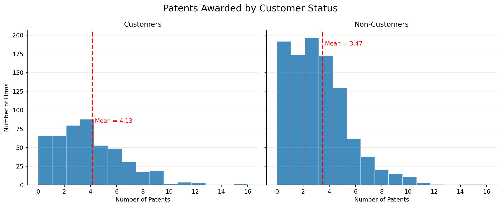
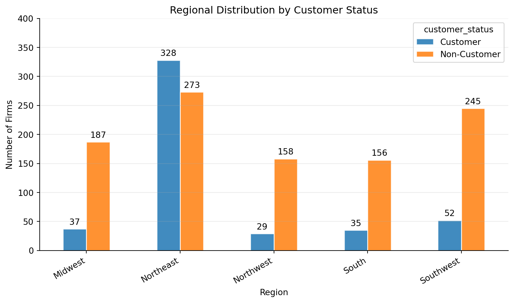
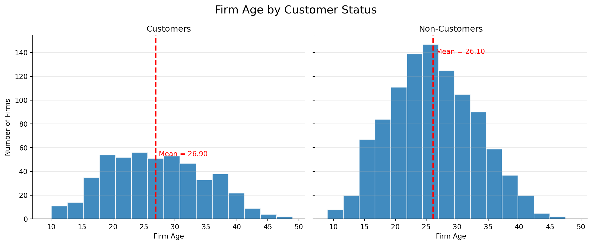
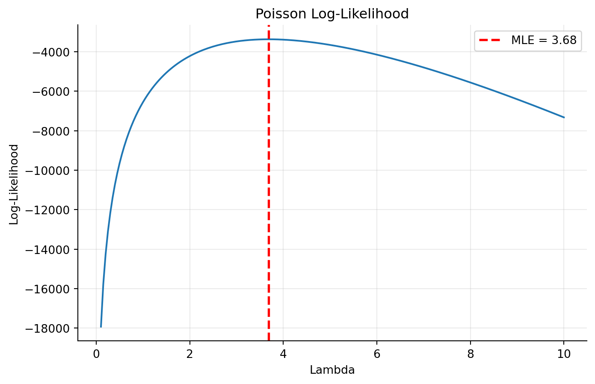
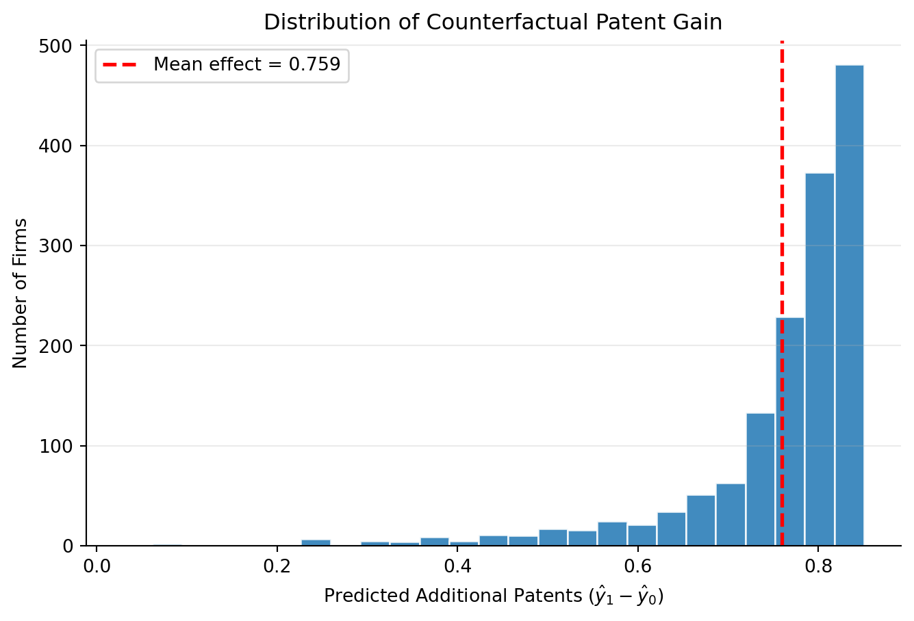

Poisson Regression and Maximum Likelihood Estimation
A Case Study of Blueprinty’s Software and Patent Awards
Introduction
Blueprinty is a small software company that helps engineering firms create blueprint documents for U.S. patent applications. The marketing team wants to show that companies using Blueprinty’s software are more successful at getting patents approved.
The best way to test this would be to compare each company’s patent success before and after using the software, but that data is not available. Instead, Blueprinty collected data from 1,500 established engineering firms, including the number of patents they received in the last 5 years, their region, company age, and whether they use Blueprinty’s software.
The challenge is that companies using Blueprinty may already be different from companies that do not use it. For example, they may be older, larger, or located in regions where patents are more common. Because of this, even if Blueprinty users have more patents, we cannot immediately say the software is the reason.
Exploring the Data
The histograms show that Blueprinty customers tend to receive slightly more patents on average than non-customers. The average number of patents for customers is about 4.13, compared to 3.47 for non-customers, as shown by the red dashed lines.
However, the two groups are not directly comparable because companies were not randomly assigned to use Blueprinty’s software. Differences in patent counts may partly reflect other firm characteristics rather than the effect of the software itself. This means the higher average among customers does not automatically prove that Blueprinty’s software improves patent success.
Regional Distribution by Customer Status

The chart shows that Blueprinty customers and non-customers are not evenly distributed across regions. Most customers are located in the Northeast, while non-customers are more common in other regions like the Midwest and Southwest.
This matters because patent activity may differ by region. Therefore, differences in patent counts may be partly caused by regional factors, not only by Blueprinty’s software.
Firm Age Distribution by Customer Status

The distributions of firm age are remarkably similar between customers and non-customers. Both groups are centered around their mid-20s, with means of 26.90 and 26.10 years respectively. Neither group skews heavily toward very young or very old firms. This suggests that firm age alone is unlikely to explain the difference in patent counts between the two groups, though we still control for age in the regression to account for any residual confounding.
A Simple Poisson Model via Maximum Likelihood
The outcome variable in this analysis is the number of patents awarded to each firm over the last five years. Because patents are count data, the values must be whole numbers and cannot be negative. For example, a firm can receive 0, 1, or 5 patents, but it cannot receive -2 or 3.7 patents.
Because of this, the Normal distribution is not a good choice for modeling the data. The Normal distribution allows negative values and continuous outcomes, which do not make sense for patent counts. Instead, the Poisson distribution is a more natural starting point because it is specifically designed for non-negative integer count data.
Likelihood and Log-Likelihood
For a Poisson random variable \(Y_i\):
\[ f(Y_i \mid \lambda) = \frac{e^{-\lambda}\lambda^{Y_i}}{Y_i!} \]
Assuming the \(n\) observations are independent and identically distributed, the joint likelihood is:
\[ L(\lambda \mid Y) = \prod_{i=1}^{n} f(Y_i \mid \lambda) = \prod_{i=1}^{n} \frac{e^{-\lambda}\lambda^{Y_i}}{Y_i!} = e^{-n\lambda} \lambda^{\sum_i Y_i} \prod_{i=1}^{n}\frac{1}{Y_i!} \]
Taking the log gives the log-likelihood function:
\[ \ell(\lambda) = \log L(\lambda) = -n\lambda + \left(\sum_{i=1}^n Y_i\right)\log\lambda - \sum_{i=1}^n \log(Y_i!) \]
Because log is a strictly increasing function, maximizing \(\ell(\lambda)\) is equivalent to maximizing \(L(\lambda)\).
Coding the Log-Likelihood
import numpy as np
import pandas as pd
import matplotlib.pyplot as plt
from scipy.special import gammaln
from scipy.optimize import minimize_scalar
# Read data
df = pd.read_csv("blueprinty.csv")
# Outcome variable
Y = df["patents"].values
# Poisson log-likelihood function
def poisson_loglikelihood(lam, Y):
n = len(Y)
return (
-n * lam
+ np.sum(Y) * np.log(lam)
- np.sum(gammaln(Y + 1))
)
# Create grid of lambda values
lambda_grid = np.linspace(0.1, 10, 200)
# Compute log-likelihood values
loglik_values = [
poisson_loglikelihood(lam, Y)
for lam in lambda_grid
]
# MLE equals sample mean
mle = np.mean(Y)
# Plot
plt.figure(figsize=(8,5))
plt.plot(lambda_grid, loglik_values)
plt.axvline(
mle,
color="red",
linestyle="--",
linewidth=2,
label=f"MLE = {mle:.2f}"
)
plt.xlabel("Lambda")
plt.ylabel("Log-Likelihood")
plt.title("Poisson Log-Likelihood")
plt.legend()
plt.grid(alpha=0.25)
plt.show()
print("Sample Mean:", mle)
Sample Mean: 3.6846666666666668The log-likelihood curve shows how well different values of \(\lambda\) fit the observed patent data. The curve reaches its highest point at the maximum likelihood estimate (MLE), which is the value of \(\lambda\) that makes the observed data most likely. Visually, the MLE can be found by locating the peak of the curve and reading the corresponding value on the x-axis.
Analytical Derivation of the MLE
Taking the derivative of \(\ell(\lambda)\) with respect to \(\lambda\) and setting it to zero: \[ \frac{d\ell}{d\lambda} = -n + \frac{\sum_i Y_i}{\lambda} = 0 \implies \hat\lambda_{\text{MLE}} = \frac{1}{n}\sum_{i=1}^n Y_i = \bar{Y} \]
This result shows that the Poisson MLE is simply the sample mean of the observed patent counts.
Numerical Verification
# Numerical optimization check
result = minimize_scalar(
lambda lam: -poisson_loglikelihood(lam, Y),
bounds=(0.01, 10),
method="bounded"
)
print(f"MLE (numerical): {result.x:.5f}")
print(f"Sample Mean: {np.mean(Y):.5f}")MLE (numerical): 3.68467
Sample Mean: 3.68467The numerical optimizer finds \(\hat{\lambda}\) = 3.684666, which closely matches \(\bar{Y}\) = 3.684667.
This confirms the numerical optimization result agrees with the analytical solution that the Poisson MLE equals the sample mean.
Poisson Regression
We now extend the simple Poisson model to a Poisson regression model, where the expected patent count can vary across firms depending on their characteristics.
Instead of assuming every firm shares the same patent rate \(\lambda\), we allow each firm to have its own rate based on variables such as firm age, region, and customer status.
\[ Y_i \sim \text{Poisson}(\lambda_i) \qquad \text{where} \qquad \lambda_i = \exp(X_i'\beta) \]
We use the exponential link because \(\lambda_i\) must be strictly positive, while \(X_i'\beta\) can take any real value. The exponential maps \(\mathbb{R} \to (0, \infty)\), guaranteeing valid Poisson rate parameters.
Design Matrix
The covariate matrix \(X\) contains:
Intercept: a column of 1s
Firm age variables:
ageage²
These terms allow the relationship between firm age and patenting to be nonlinear.
Region indicators:
- Northeast
- Northwest
- South
- Southwest
Midwest is used as the omitted reference category to avoid perfect collinearity with the intercept.
Customer status:
iscustomer
A binary indicator for whether the firm uses Blueprinty’s software.
Log-Likelihood for Poisson Regression
The Poisson regression log-likelihood function is:
\[ \ell(\beta) = \sum_{i=1}^{n} \left[ -\exp(X_i'\beta) + Y_i(X_i'\beta) - \log(Y_i!) \right] \]
def poisson_reg_loglikelihood(beta, Y, X):
# Poisson means
lam = np.exp(X @ beta)
# Log-likelihood
return np.sum(
-lam
+ Y * np.log(lam)
- gammaln(Y + 1)
)MLE via Numerical Optimization
from scipy import optimize
# Build region dummy variables
region_dummies = (
pd.get_dummies(
df['region'],
drop_first=False
)
.drop(columns='Midwest')
.astype(float)
)
# Standardize age
df['age_scaled'] = (
df['age'] - df['age'].mean()
) / df['age'].std()
# Squared term
df['age2_scaled'] = df['age_scaled']**2
# Construct design matrix
X_df = pd.DataFrame({
'Intercept': 1.0,
'age': df['age_scaled'],
'age2': df['age2_scaled']**2,
'iscustomer': df['iscustomer'].astype(float)
})
# Combine with region dummies
X_df = pd.concat(
[X_df, region_dummies],
axis=1
)
# Convert to numpy matrix
X_mat = X_df.values
# Store column names
col_names = X_df.columns.tolist()
# Initial values
beta0 = np.zeros(X_mat.shape[1])
# Numerical optimization
result = optimize.minimize(
lambda b: -poisson_reg_loglikelihood(
b,
Y,
X_mat
),
beta0,
method='BFGS',
options={'maxiter': 5000}
)
# Estimated coefficients
beta_hat = result.x
print(beta_hat)[ 1.27033982 -0.0505427 -0.03277687 0.19916077 0.03569548 -0.01203821
0.05254168 0.05261899]Because the BFGS optimizer can sometimes encounter numerical overflow, we also estimate the model using statsmodels GLM, which uses a more numerically stable iteratively reweighted least squares (IRLS) algorithm.
glm_model = sm.GLM(
Y,
X_mat,
family=sm.families.Poisson()
)
glm_fit = glm_model.fit()Coefficient Table
| Estimate | Std. Error | z-value | p-value | |
|---|---|---|---|---|
| Coefficient | ||||
| Intercept | 1.2703 | 0.0372 | 34.161 | < 0.001 |
| age | -0.0505 | 0.0147 | -3.432 | < 0.001 |
| age2 | -0.0328 | 0.0036 | -9.179 | < 0.001 |
| iscustomer | 0.1992 | 0.0309 | 6.454 | < 0.001 |
| Northeast | 0.0357 | 0.0436 | 0.819 | 0.413 |
| Northwest | -0.0120 | 0.0538 | -0.224 | 0.823 |
| South | 0.0525 | 0.0527 | 0.998 | 0.318 |
| Southwest | 0.0526 | 0.0472 | 1.115 | 0.265 |
Interpretation
The coefficient on iscustomer is positive (\(\hat{\beta}=0.199\)) and statistically significant (\(p < 0.001\)). This suggests that Blueprinty customers tend to receive more patents on average than non-customers, even after controlling for firm age and region. The positive coefficient is consistent with the idea that Blueprinty’s software may be associated with greater patent success.
The coefficients on age (\(\hat{\beta}=-0.051\)) and age² (\(\hat{\beta}=-0.033\)) are both negative and statistically significant (\(p < 0.001\)). This indicates that the relationship between firm age and patenting is nonlinear, with patent activity tending to decline as firms become older.
Most of the regional coefficients are relatively small and not statistically significant, suggesting that regional differences in patent counts may be limited once customer status and firm age are taken into account.
Comparison MLE & GLM Outcomes
comparison = pd.DataFrame({
"Numerical MLE": beta_hat,
"GLM Estimate": glm_fit.params,
"Difference": beta_hat - glm_fit.params
})
comparison.index = col_names
print(comparison.round(6)) Numerical MLE GLM Estimate Difference
Intercept 1.270340 1.270340 0.0
age -0.050543 -0.050543 -0.0
age2 -0.032777 -0.032777 -0.0
iscustomer 0.199161 0.199161 -0.0
Northeast 0.035695 0.035695 0.0
Northwest -0.012038 -0.012038 0.0
South 0.052542 0.052542 0.0
Southwest 0.052619 0.052619 0.0The statsmodels GLM estimates should closely match the numerical optimization results. Small differences may appear because the GLM uses Fisher scoring and analytically computed information matrices, while numerical optimization relies on approximations to the Hessian matrix.
The Effect of Blueprinty’s Software
The coefficients from a Poisson regression are not directly interpretable as “additional patents” because the model is multiplicative rather than additive. To obtain a more interpretable estimate, we construct two counterfactual datasets:
\(X_0\): all firms are treated as non-customers (iscustomer = 0)
\(X_1\): all firms are treated as customers (iscustomer = 1)
All other firm characteristics, such as age and region, are held fixed at their observed values.
Counterfactual Predictions
# Create counterfactual datasets
X0 = X_df.copy()
X1 = X_df.copy()
# Set all firms to non-customers
X0['iscustomer'] = 0
# Set all firms to customers
X1['iscustomer'] = 1
# Convert to numpy arrays
X0_mat = X0.values
X1_mat = X1.values
# Predict expected patent counts
yhat0 = glm_fit.predict(X0_mat)
yhat1 = glm_fit.predict(X1_mat)
# Individual counterfactual effects
effect_i = yhat1 - yhat0
# Average effect
average_effect = np.mean(effect_i)
print(f"Average predicted patents (non-customer): {np.mean(yhat0):.4f}")
print(f"Average predicted patents (customer): {np.mean(yhat1):.4f}")
print(f"Average effect of Blueprinty software: {average_effect:.4f}")Average predicted patents (non-customer): 3.4453
Average predicted patents (customer): 4.2046
Average effect of Blueprinty software: 0.7593Distribution of Counterfactual Patent Gain

Interpretation
The histogram shows the distribution of predicted patent gains from becoming a Blueprinty customer while holding firm age and region fixed. Nearly all firms are predicted to experience a positive increase in expected patent counts under the customer scenario.
Conclusion
The counterfactual analysis provides evidence consistent with Blueprinty’s marketing claim: firms using the software are estimated to receive about 0.76 more patents over five years, even after controlling for age and region.
However, this is an observational study, not a randomized experiment. We cannot rule out the possibility that Blueprinty’s customers differ from non-customers in unobserved ways — such as higher R&D investment, stronger patent teams, or a more innovation-focused culture — that independently contribute to higher patent success.
As a result, the findings are suggestive but not definitive. The analysis supports Blueprinty’s claim, but it does not conclusively prove that the software itself causes firms to receive more patents.